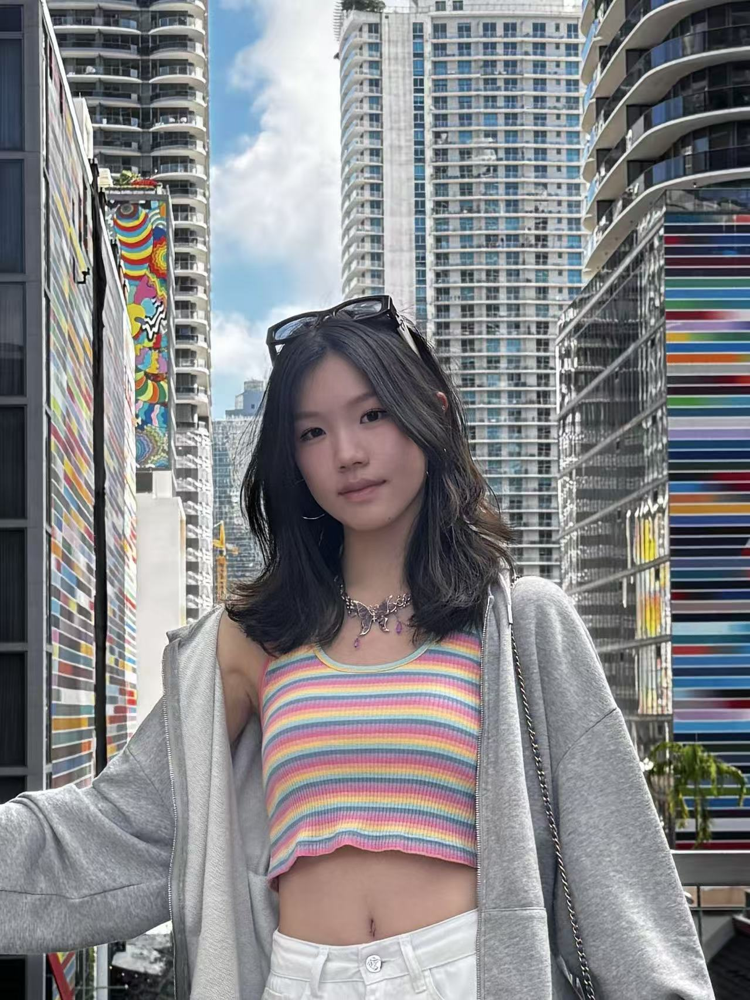

Yiyun (Nicole) Chen.
Undergraduate · Emory University
I am an undergraduate student at Emory University, double majoring in Computer Science and Applied Mathematics & Statistics. My research centers on reliable machine learning, with a particular interest in AI for healthcare.
I study how models can quantify uncertainty, calibrate their predictions across diverse groups, and improve through interaction and feedback. My goal is to develop robust, adaptive systems that turn complex, imperfect data into actionable insights for real-world decision-making.
News
Excited to serve as a reviewer for NeurIPS 2026!
Excited to receive $5,000 in NSF-supported funding for summer research with Prof. Xi!
Excited to receive $4,000 in Pathways Internship Funding from Emory University!